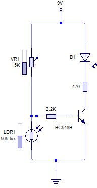
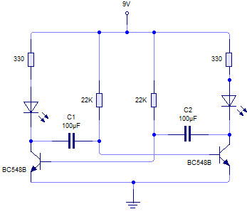
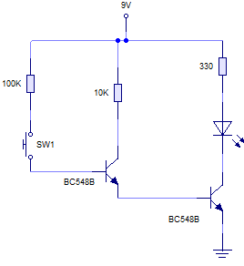
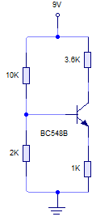

Electrónica analógica 4º E.S.O.
Circuitos con transistores
Las aplicaciones del transistor, como componente discreto, son innumerables. Puedes verlas a continuación: detector de luz, ventilador activado por NTC (detector de temperatura); detector de humedad con par Darlington; multivibrador astable (oscilador), o un montaje que se llama polarización por divisor de tensión, que es bastante habitual en los circuitos con transistores. Por cierto, este último lo tienes resuelto en el apéndice IV.
En los encabezados de la siguiente tabla puedes descargar las correspondientes simulaciones en Livewire.
Si pulsas en las imágenes, podrás ir al análisis del circuito.
| DETECTOR DE OSCURIDAD | VENTILADOR ACTIVADO POR NTC |
|  |  |
| CIRCUITO TEMPORIZADOR | MULTIVIBRADOR ASTABLE |
 |
 |
| PAR DARLINGTON | POLARIZACIÓN POR DIVISOR DE TENSIÓN (UNIVERSAL) |
|  |  |
Obra publicada con Licencia Creative Commons Reconocimiento No comercial Compartir igual 4.0